Design Approach
Strategy → Identity → Experience
从品牌策略、视觉识别，到包装、空间、传播与数字媒介，建立完整且可持续延展的设计系统。
02 Selected Cases05 Creative Fields
以品牌策略、视觉叙事与 AIGC 工作流，构建兼具商业价值与审美表达的设计项目。
两个品牌项目保留完整图片与文案，以更克制、更有节奏的卡片系统呈现。

新式情绪果饮品牌视觉识别设计。
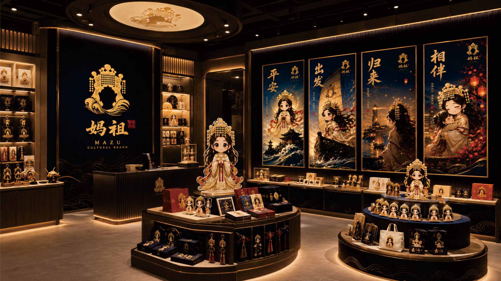
以“守护常在”为核心的现代东方品牌系统。
从品牌策略、视觉识别，到包装、空间、传播与数字媒介，建立完整且可持续延展的设计系统。
将品牌项目与多元商业视觉模块并置，形成更完整的作品集层级。
两个品牌项目继续保持三栏排列，文字信息统一改成精选项目中的卡片格式与层级。
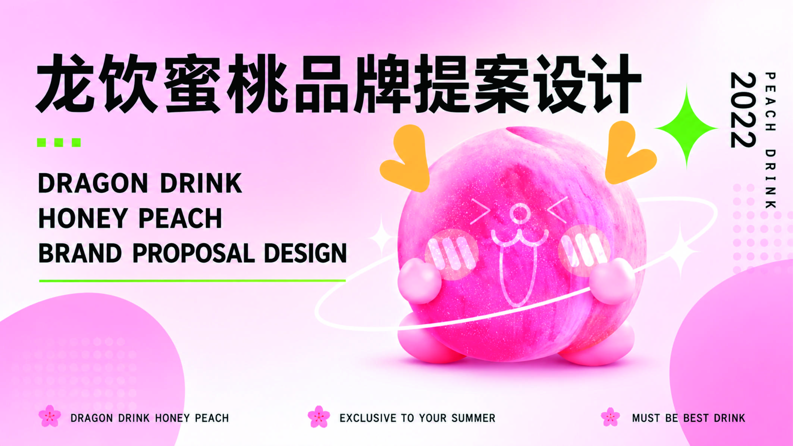
围绕“蜜桃”这一超级符号，建立从品牌识别、包装系统到门店空间与社交传播的完整品牌体验。
以“守护常在”为核心，将海浪、光晕与灯塔光束转化为可持续延展的现代东方视觉系统。
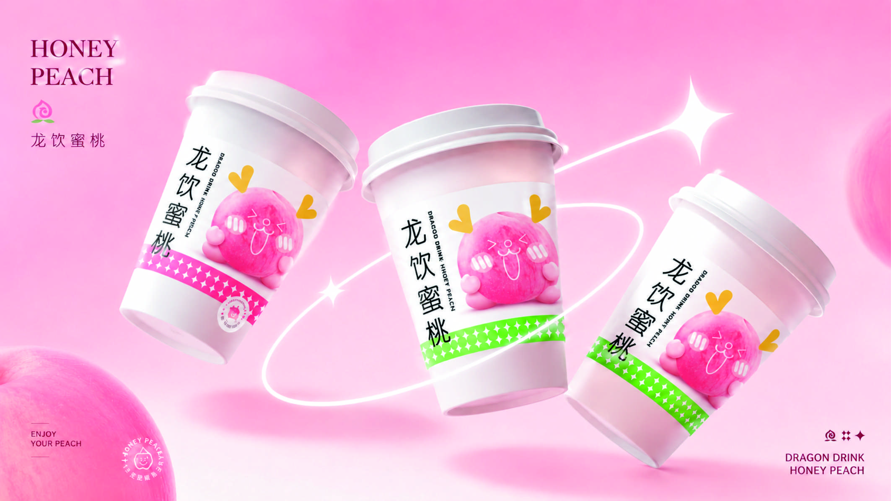
基于目标人群、品牌调性与应用场景建立完整系统，让 Logo、包装、传播与空间体验保持一致。
用更轻的卡片尺寸与循环流动的展示带，呈现不同包装与消费触点，桌面端始终保持四张卡片的浏览节奏。
纸杯、纸袋、外卖包装与品牌周边。
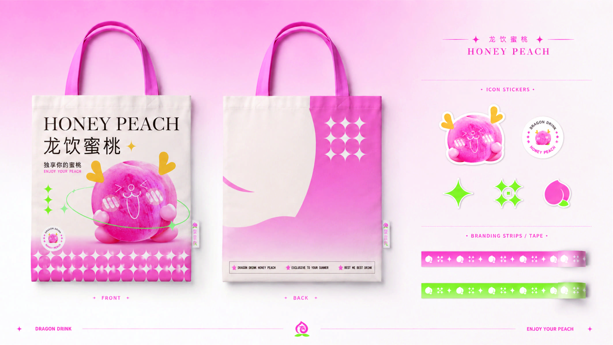
统一符号与色彩，强化品牌辨识度。
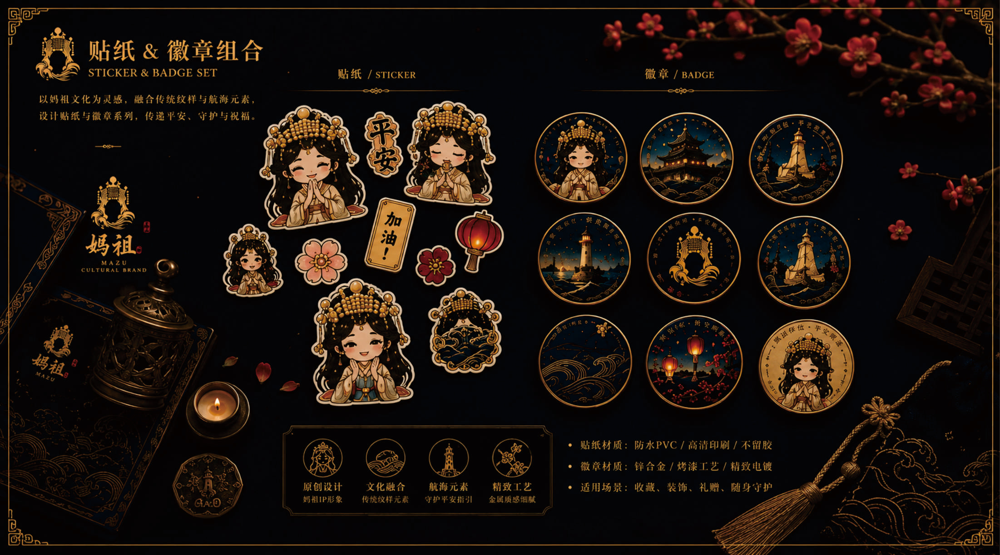
祈福卡、御守卡、明信片与香片包装。
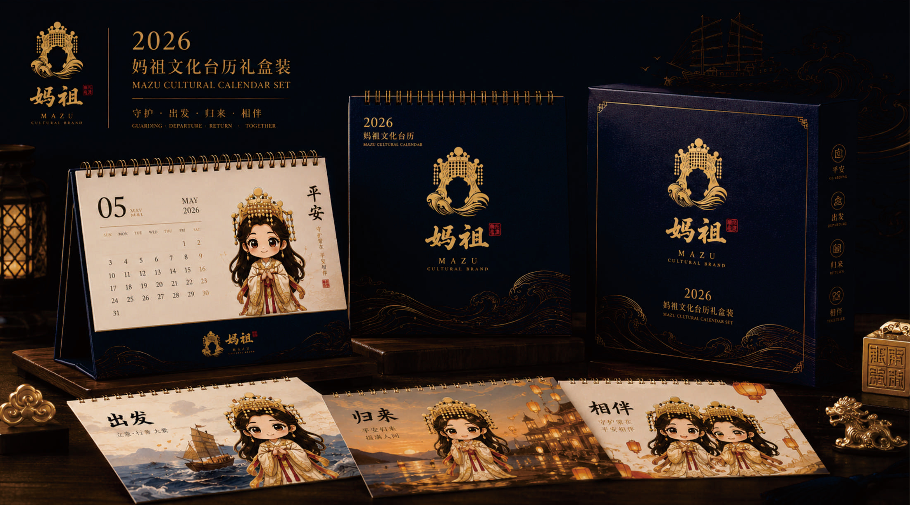
以现代东方视觉延展文创体验。
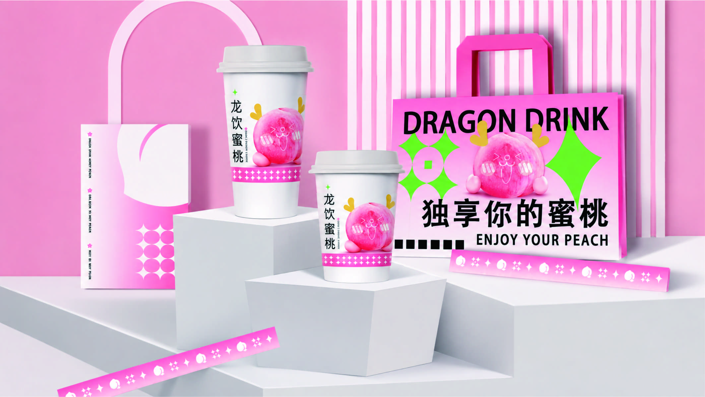
从包装延伸到门店消费触点。
保持 5 个展示卡片，并以轮播方式循环展示；卡片尺寸与间距统一参考你给的图示比例，不做过长过大的模块。
品牌活动、节日传播与电商 KV。
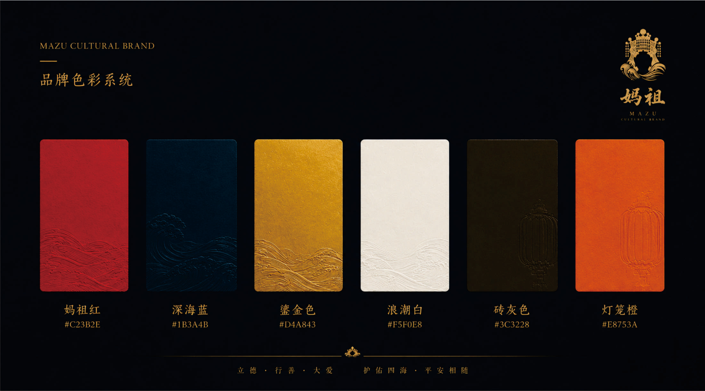
统一视觉语法下的多主题传播。
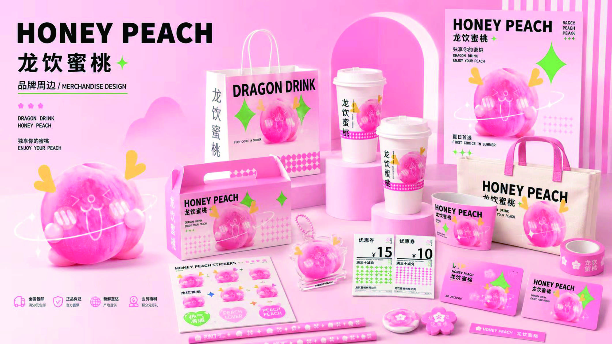
面向年轻受众的情绪化内容表达。
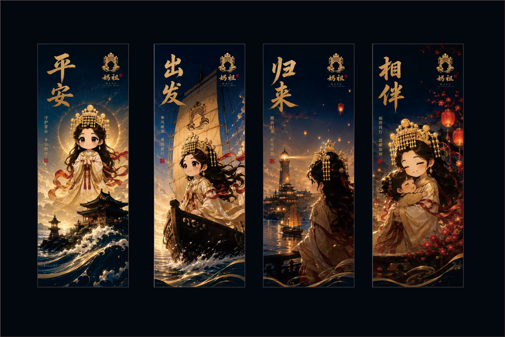
主视觉、活动传播与展示画面。
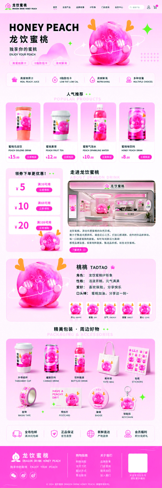
围绕品牌情绪感与场景体验建立主视觉。
将 AI 生成、产品合成、图像精修与品牌系统结合，形成可落地的商业视觉工作流。
品牌短片、动态海报、分镜、剪辑与 AI 视频项目的展示区域。